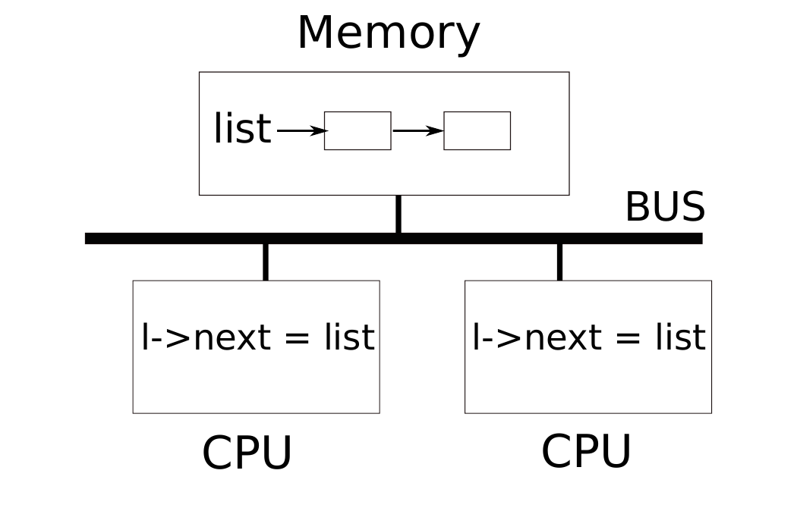
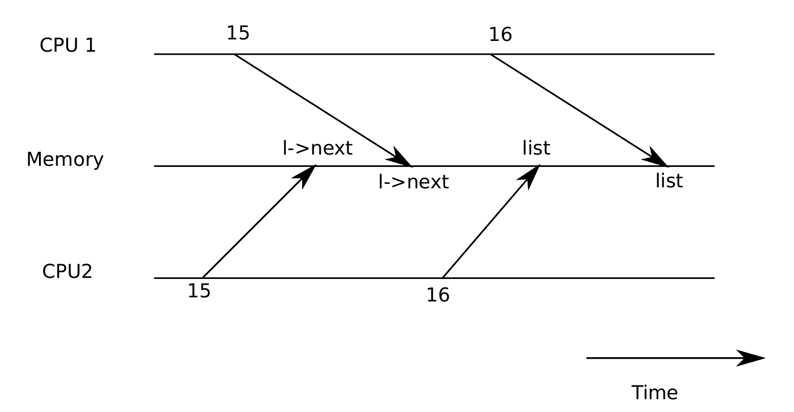
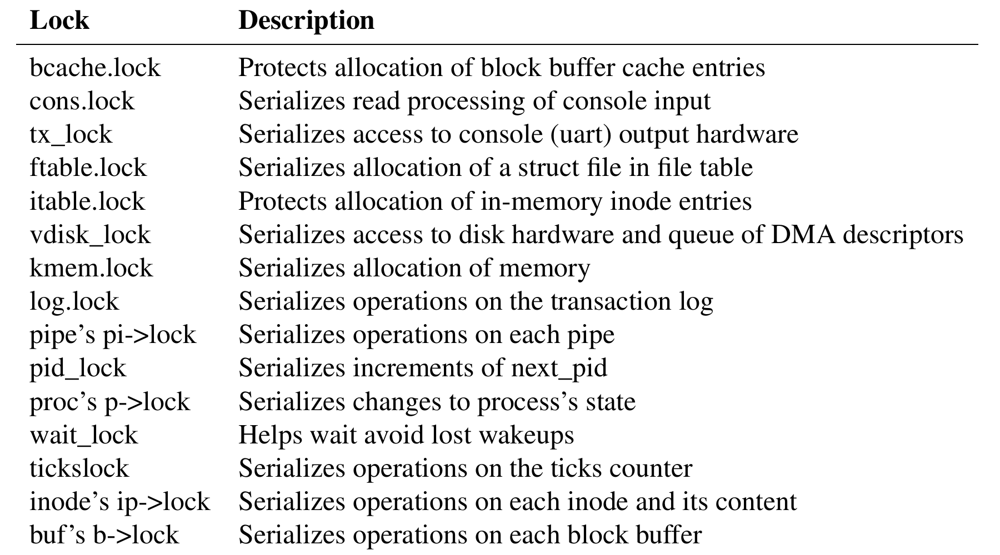

第 7 章 锁
大多数内核，包括 xv6，都会交错执行多个活动。交错执行的一个来源是多处理器硬件：计算机有多个独立执行的 CPU，例如 xv6 面向的 RISC-V。这些 CPU 共享物理 RAM，xv6 利用这种共享来维护所有 CPU 都会读写的内核数据结构。这种共享带来一种可能：一个 CPU 正在更新某个数据结构的中途，另一个 CPU 读取了它；甚至多个 CPU 同时更新同一数据结构。如果没有仔细设计，这种并行访问很可能产生错误结果或破坏数据结构。即使在单处理器上，内核也可能在多个线程之间切换 CPU，导致它们的执行交错。最后，如果设备中断处理程序修改的数据也被可中断代码修改，那么中断在恰好错误的时刻发生时也可能损坏数据。并发（concurrency）指的就是由于多处理器并行、线程切换或中断而交错多个指令流的情况。
内核中充满了会被并发访问的数据。例如，两个 CPU 可能同时调用 kalloc，从空闲链表头并发弹出页。内核设计者希望允许大量并发，因为并行性可以提高性能，也可以提高响应性。但这也要求内核设计者在并发存在时仍能确信代码正确。通向正确代码的方式有很多，有些比其他方式更容易推理。旨在保证并发正确性的策略，以及支持这些策略的抽象，称为并发控制技术。
xv6 根据场景使用多种并发控制技术；可能的技术还很多。本章聚焦一种广泛使用的技术：锁。锁提供互斥，保证同一时刻只有一个 CPU 持有该锁。如果程序员把每个共享数据项和一个锁关联起来，并且代码在使用该项时总是持有关联锁，那么同一时刻只有一个 CPU 会使用该数据项。在这种情况下，我们说这个锁保护该数据项。虽然锁是容易理解的并发控制机制，但其缺点是可能限制性能，因为锁会把并发操作串行化。
本章余下部分解释 xv6 为什么需要锁，xv6 如何实现锁，以及如何使用锁。

7.1 竞争
为了说明为什么需要锁，考虑两个拥有已退出子进程的进程在两个不同 CPU 上调用 wait 系统调用。wait 会释放子进程内存。因此每个 CPU 上的内核都会调用 kfree 释放子进程的内存页。内核分配器维护一个空闲页链表：kalloc() (3027) 从链表弹出一个内存页，kfree() (3005) 把页压入链表。为了最佳性能，我们可能希望两个父进程的 kfree 并行执行，互不等待；但按照 xv6 的 kfree 实现，这样并不正确。
图 7.1展示了更详细的场景：空闲页链表在两个 CPU 共享的内存中，两个 CPU 使用 load 和 store 指令操作链表。（现实中处理器有缓存，但从概念上看，多处理器系统表现得像存在一份共享内存。）如果没有并发请求，可以这样实现链表 push 操作：
struct element {
int data;
struct element *next;
};
struct element *list = 0;
void
push(int data)
{
struct element *l;
l = malloc(sizeof *l);
l->data = data;
l->next = list;
list = l;
}单独执行时，这个实现是正确的。但如果多个副本并发执行，就不正确。如果两个 CPU 同时执行 push，它们可能都在执行 list = l 之前读到相同的旧 list 值。这样就会产生两个 next 指向同一个旧表头的元素；两个对 list 的赋值随后发生时，第二个会覆盖第一个，第一个赋值涉及的元素丢失。

这种丢失更新是竞争（race）的一个例子。竞争是指某个内存位置被并发访问，并且至少有一个访问是写。竞争通常是 bug 的信号：要么是丢失更新（如果访问是写），要么是读取到尚未完全更新的数据结构。竞争的结果取决于编译器生成的机器码、相关 CPU 的时序，以及内存系统如何排序它们的内存操作，这会使竞争引起的错误难以复现和调试。例如，在调试 push 时添加打印语句，可能足以改变执行时序，使竞争消失。
避免竞争的常见方式是使用锁。锁保证互斥，使同一时刻只有一个 CPU 能执行 push 中的敏感行；这样上面的场景就不可能发生。加锁后的正确版本只需要增加少量代码：
struct element *list = 0;
struct lock listlock;
void
push(int data)
{
struct element *l;
l = malloc(sizeof *l);
l->data = data;
acquire(&listlock);
l->next = list;
list = l;
release(&listlock);
}acquire 和 release 之间的指令序列常称为临界区。这个锁被称为保护 list。更准确地说，锁保护的是作用于数据的一组不变量。一个操作的正确性通常依赖操作开始时不变量成立；操作期间可能临时破坏不变量，但结束前必须恢复。链表例子中的不变量是：list 指向链表第一个元素，且每个元素的 next 字段指向下一个元素。push 会短暂破坏这个不变量：在设置 l->next 之后，l 指向下一个元素，但 list 还未指向 l。锁保证同一时刻只有一个 CPU 能在临界区中操作该数据结构，所以没有 CPU 会在不变量暂时不成立时执行依赖这些不变量的操作。
可以把锁看作把并发临界区串行化，使它们一次运行一个，从而保持不变量。也可以把受同一把锁保护的临界区看作彼此原子：每个临界区只看到之前临界区的完整修改，而不会看到半完成更新。
锁虽然有助于正确性，但天然会限制性能。例如两个进程并发调用 kfree 时，锁会把两个临界区串行化，所以在不同 CPU 上运行它们没有收益。多个进程如果同一时间想要同一把锁，就称为冲突，或者说锁出现争用。内核设计的一个主要挑战，是为了追求并行性而避免锁争用。xv6 在这方面做得很少，但复杂内核会专门组织数据结构和算法来避免锁争用。例如，一个内核可以为每个 CPU 维护独立空闲链表，只有当前 CPU 的链表为空且必须从其他 CPU “偷取”内存时才访问其他 CPU 的链表。
锁的位置也影响性能。例如，在 push 中把 acquire 移到 malloc 之前也是正确的，但可能降低性能，因为这样会把 malloc 调用也串行化。下面“使用锁”一节会给出插入 acquire 和 release 的一些准则。
7.2 代码：锁
请阅读 kernel/spinlock.h 和 kernel/spinlock.c。
xv6 有两类锁：自旋锁和睡眠锁。先看自旋锁。xv6 用 struct spinlock (1201) 表示自旋锁。结构中重要字段是 locked：锁可用时它为零，锁被持有时它非零。逻辑上，xv6 可以用下面这样的代码获取锁：
void
acquire(struct spinlock *lk) // 这个实现不能工作
{
for(;;) {
if(lk->locked == 0) {
lk->locked = 1;
break;
}
}
}不幸的是，这个实现在多处理器上不能保证互斥。两个 CPU 可能同时到达检查 lk->locked == 0 的位置，都看到零，然后都通过赋值把锁拿到手。此时两个 CPU 都持有锁，违反互斥。我们需要一种方法，把检查和设置作为原子（不可分割）步骤执行。
由于锁使用广泛，多核处理器通常提供能使检查和设置原子化的指令。在 RISC-V 上，这条指令是 amoswap r, a。amoswap 读取内存地址 a 的值，把寄存器 r 的内容写到该地址，并把读取到的值放入 r。也就是说，它交换寄存器和被寻址内存位置的内容。它用特殊硬件原子地执行这个序列，防止其他 CPU 在读和写之间使用该内存地址。
可移植 C 库调用 __sync_lock_test_and_set(addr, value) 会归约为 amoswap 指令；函数返回 *addr 的旧值。下面是 acquire 中循环的正确写法：
while(__sync_lock_test_and_set(&lk->locked, 1) != 0)
;xv6 的 acquire (1271) 使用上述循环。每次迭代都会把 1 交换到 lk->locked，并检查先前值；如果先前值是零，说明我们获得了锁，交换也把 lk->locked 设为 1。如果先前值是 1，说明其他 CPU 持有锁，而我们原子地把 1 换入 lk->locked 并没有改变它的值。
锁被获取后，acquire 会记录获取锁的 CPU，以便调试。lk->cpu 字段由锁保护，只能在持有锁时修改。release (1302) 与 acquire 相反：它清除 lk->cpu 字段并释放锁。概念上释放锁只需要把 lk->locked 赋值为零。但 C 标准允许编译器用多条 store 指令实现一次赋值，因此 C 赋值相对于并发代码可能不是原子的。release 因此使用 C 库函数 __sync_lock_release 执行原子赋值；这个函数也会归约为 RISC-V amoswap 指令。
7.3 代码：使用锁
xv6 在许多地方使用锁来避免竞争。前面提到的 kalloc (3027) 和 kfree (3005) 是很好的例子。尝试练习 1 和 2，看看这些函数省略锁后会发生什么。你可能会发现很难触发错误行为，这说明可靠测试代码是否没有锁错误和竞争很困难。xv6 很可能仍有尚未发现的竞争。
使用锁的困难部分在于决定使用多少锁，以及每把锁应保护哪些数据和不变量。有一些基本原则。第一，只要一个变量可能被一个 CPU 写，同时被另一个 CPU 读或写，就应使用锁防止两个操作重叠。第二，记住锁保护的是不变量：如果一个不变量涉及多个内存位置，通常需要用同一把锁保护所有这些位置，才能确保不变量得到维护。
上述规则说明什么时候需要锁，但没有说明什么时候不需要锁。为了效率，避免锁太多也很重要，因为锁会减少并行性。如果并行性不重要，可以只安排一个线程而不担心锁。一个简单内核可以在多处理器上使用单一“大内核锁”：每次从用户空间进入内核进行系统调用或中断时获取该锁，返回用户空间时释放。许多单处理器操作系统曾用这种方法移植到多处理器上，但这种方法牺牲并行性：同一时间只有一个 CPU 能在内核中执行。如果内核消耗显著 CPU 时间，就可以通过用不同锁保护不同对象或模块，让不同 CPU 同时在内核不同部分执行，获得更多并行性。
作为粗粒度加锁的例子，xv6 的 kalloc.c 分配器只有一个空闲链表，并由一把锁保护。如果不同 CPU 上的多个进程同时尝试分配页，每个进程都必须在 acquire 中自旋等待轮到自己。自旋会浪费 CPU 时间。如果锁争用浪费了大量 CPU 时间，也许可以把分配器改为每个 CPU 一个空闲链表、每个链表一把锁，从而允许真正并行分配。
作为细粒度加锁的例子，xv6 为每个文件设置一把独立锁，因此操作不同文件的进程通常可以不等待彼此的锁。如果希望允许进程同时写同一文件的不同区域，文件加锁方案还可以更细。锁粒度的最终决定需要由性能测量和复杂性考虑共同驱动。
后续章节在解释 xv6 各部分时，会提到 xv6 如何用锁处理并发。作为预览，图 7.3列出了 xv6 中的所有锁。

7.4 死锁和锁顺序
假设运行在 CPU C1 和 C2 上的函数都需要同时持有锁 A 和锁 B，但它们以不同顺序获取：
CPU C1 CPU C2
acquire(&A); acquire(&B);
acquire(&B); acquire(&A);
... ...
release(&B); release(&A);
release(&A); release(&B);如果运气不好，C1 和 C2 可能同时执行各自的第一个 acquire；二者都能成功，因为请求的是不同锁。但随后 C1 和 C2 都会在第二次 acquire() 中等待，因为两把锁都已经由另一个 CPU 持有。由于两个 CPU 都在互相等待，谁也不会释放锁，于是都永远等待。这种情况称为死锁。
C1/C2 例子中的关键问题是两个 CPU 以不同顺序获取锁。如果它们都先尝试获取 A，那么其中一个会获取 A 再获取 B，然后释放二者；之后另一个 CPU 就能继续。更一般地，为避免死锁，加锁代码必须遵循这条规则：所有持有多把锁的代码路径必须以相同顺序获取锁。对全局锁获取顺序的需求意味着锁实际上是每个函数规范的一部分：调用者必须以导致锁按约定顺序获取的方式调用函数。
xv6 因为 sleep 的工作方式（见第 9 章），有许多长度为 2、涉及每进程锁（每个 struct proc 中的锁）的锁顺序链。例如 consoleintr (7107) 是处理键入字符的中断例程。换行到达时，任何等待控制台输入的进程都应被唤醒。为此，consoleintr 在持有 cons.lock 时调用 wakeup，后者会获取等待进程的锁来唤醒它。因此，全局避免死锁的锁顺序包含这样一条规则：必须先获取 cons.lock，再获取任何进程锁。文件系统代码包含 xv6 中最长的锁链。例如创建文件需要同时持有目录锁、新文件 inode 锁、磁盘块缓冲区锁、磁盘驱动的 vdisk_lock，以及调用进程的 p->lock。为避免死锁，文件系统代码总是按上述顺序获取锁。
遵守全局避免死锁顺序可能出人意料地困难。有时锁顺序会与程序逻辑结构冲突，例如代码模块 M1 调用模块 M2，但锁顺序要求先获取 M2 中的锁再获取 M1 中的锁。有时锁的身份事先未知，因为必须先持有一把锁才能发现下一把要获取的锁。这类情况会出现在文件系统逐个查找路径名组件时，也会出现在 wait 和 exit 系统调用搜索进程表寻找子进程时。最后，死锁风险常常限制加锁方案能做到多细，因为锁越多，死锁机会越多。避免死锁通常是内核实现中的一个主要因素。
有时会问：如果 CPU 尝试获取自己已经持有的锁，应发生什么？一种观点认为这应被允许：没有其他 CPU 能持有该锁，所以不必担心 CPU 之间互相干扰受保护数据的使用。允许 CPU 重新获取自己已经持有的锁的锁系统称为可重入或递归锁。另一种观点是，如果锁已经被持有，即使在同一 CPU 上，也意味着某个操作可能临时破坏了不变量且尚未恢复；在不变量不成立时允许新操作开始，似乎是在邀请 bug。xv6 采用后一种观点，禁止 CPU 重新获取自己当前持有的锁。acquire 中调用 holding 的目的就是检测这种情况。
7.5 锁和中断
xv6 中有些自旋锁保护的数据既被线程使用，也被中断处理程序使用。例如，clockintr 定时器中断处理程序可能在 sys_pause 读取 ticks 的同时递增 ticks (3482) (3836)。锁 tickslock 串行化这两次访问。
自旋锁和中断的交互带来一个潜在危险。假设 sys_pause 持有 tickslock，它所在 CPU 被定时器中断打断。clockintr 会尝试获取 tickslock，看到它已被持有，于是等待释放。在这种情况下，tickslock 永远不会释放：只有 sys_pause 能释放它，但 sys_pause 要等 clockintr 返回后才会继续运行。因此 CPU 会死锁，任何需要相关锁的代码也会冻结。
为了避免这种情况，如果某把自旋锁被中断处理程序使用，CPU 绝不能在中断启用时持有这把锁。xv6 更保守：当 CPU 获取任何锁时，xv6 总是在该 CPU 上禁用中断。中断仍可能发生在其他 CPU 上，所以中断中的 acquire 可以等待某个线程释放自旋锁；只是不允许在同一个 CPU 上这样等待。
xv6 在 CPU 不持有任何自旋锁时重新启用中断；它必须做一点记账以处理嵌套临界区。acquire 调用 push_off (1355)，release 调用 pop_off (1369)，跟踪当前 CPU 上锁的嵌套层数。当该计数变为零时，pop_off 恢复最外层临界区开始时存在的中断启用状态。intr_off 和 intr_on 函数分别执行 RISC-V 指令禁用和启用中断。
acquire 必须严格先调用 push_off，再设置 lk->locked (1277)。如果顺序相反，就会有一小段窗口：锁已被持有但中断仍启用；若中断不幸在此时发生，系统会死锁。类似地，release 必须在释放锁之后才调用 pop_off (1321)。
7.6 指令和内存顺序
很自然会认为程序按源代码语句出现的顺序执行。对单线程代码而言，这是一种合理的心智模型；但当多个线程通过共享内存交互时，这个模型不正确 [2] [4]。一个原因是编译器可能以不同于源代码暗示的顺序发出 load 和 store 指令，甚至完全省略它们（例如把数据缓存在寄存器中）。另一个原因是 CPU 可能为了提高性能乱序执行指令。例如，CPU 可能发现一串指令中的 A 和 B 互不依赖，于是先启动 B，因为 B 的输入先准备好，或者为了重叠执行 A 和 B。
举例来说，在下面的 push 代码中，如果编译器或 CPU 把第 4 行对应的 store 移动到第 6 行的 release 之后，将是灾难：
l = malloc(sizeof *l);
l->data = data;
acquire(&listlock);
l->next = list;
list = l;
release(&listlock);如果发生这种重排，就会出现一个窗口：另一个 CPU 可以获取锁并观察到更新后的 list，但看到未初始化的 list->next。
好消息是，编译器和 CPU 通过遵循一组称为内存模型的规则，并提供一些原语帮助程序员控制重排，从而帮助并发程序员。为了告诉硬件和编译器不要重排，xv6 在 acquire (1271) 和 release (1302) 中都使用 __sync_synchronize()。__sync_synchronize() 是内存屏障：它告诉编译器和 CPU 不要跨过屏障重排 load 或 store。xv6 的 acquire 和 release 中的屏障，在几乎所有重要场景中强制了顺序，因为 xv6 用锁围绕共享数据访问。第 11 章会讨论少数例外。
7.7 睡眠锁
xv6 有时需要长时间持有锁。例如文件系统（第 10 章）在读写磁盘上的文件内容时会保持文件被锁住，而这些磁盘操作可能需要数十毫秒。如此长时间持有自旋锁会造成浪费：如果另一个进程想获取该锁，它会长时间自旋，白白消耗 CPU。自旋锁的另一个缺点是，进程不能在保留自旋锁时让出 CPU；我们希望能让出 CPU，使其他进程在持锁进程等待磁盘时使用 CPU。持有自旋锁时让出 CPU 是非法的，因为如果第二个线程随后尝试获取这把自旋锁，可能导致死锁；由于 acquire 不让出 CPU，第二个线程的自旋可能阻止第一个线程运行并释放锁。持锁让出 CPU 也会违反持有自旋锁时必须关闭中断的要求。因此我们希望有一种锁，它在等待获取时让出 CPU，并允许持有锁期间发生让出和中断。
xv6 以睡眠锁的形式提供这样的锁。acquiresleep (4471) 等待时会让出 CPU，使用第 9 章将解释的技术。从高层看，睡眠锁有一个由自旋锁保护的 locked 字段，acquiresleep 对 sleep 的调用会原子地让出 CPU 并释放自旋锁。结果是其他线程可以在 acquiresleep 等待时执行。
由于睡眠锁保持中断启用，它们不能在中断处理程序中使用。由于 acquiresleep 可能让出 CPU，睡眠锁不能在自旋锁临界区中使用（不过自旋锁可以在睡眠锁临界区中使用）。自旋锁最适合短临界区，因为等待它们会浪费 CPU 时间；睡眠锁适合较长操作。
7.8 现实世界
尽管人们多年研究并发原语和并行性，用锁编程仍然很有挑战。通常最好把锁隐藏在同步队列等更高层结构中，虽然 xv6 没有这样做。如果你用锁编程，明智的做法是使用尝试识别竞争的工具，因为很容易漏掉某个需要锁保护的不变量。
大多数操作系统支持 POSIX 线程（Pthreads），它允许一个用户进程拥有多个在不同 CPU 上并发运行的线程。Pthreads 支持用户级锁、屏障等。Pthreads 还允许程序员可选地指定锁应是可重入的。
在用户级支持 Pthreads 需要操作系统支持。例如，如果一个 pthread 在系统调用中阻塞，同一进程的另一个 pthread 应该能够在该 CPU 上运行。又如，如果一个 pthread 改变了进程地址空间（例如映射或取消映射内存），内核必须安排运行同一进程线程的其他 CPU 更新其硬件页表，以反映地址空间变化。
可以不用原子指令实现锁 [10]，但代价很高，所以大多数操作系统使用原子指令。
如果许多 CPU 同时尝试获取同一把锁，锁可能很昂贵。如果一个 CPU 在本地缓存中缓存了锁，而另一个 CPU 必须获取它，那么更新包含该锁的缓存行的原子指令必须把该行从一个 CPU 的缓存移动到另一个 CPU 的缓存，并可能使该缓存行的其他副本失效。从另一个 CPU 的缓存获取缓存行，可能比从本地缓存获取缓存行贵几个数量级。
为了避免锁相关开销，许多操作系统使用无锁数据结构和算法 [6] [12]。例如，可以实现一种链表：搜索链表不需要锁，插入项只需要一条原子指令。但无锁编程比用锁编程更复杂；例如必须担心指令和内存重排。用锁编程已经很难，所以 xv6 避免了无锁编程的额外复杂性。
7.9 练习
- 注释掉
kalloc(3027) 中对acquire和release的调用。这似乎会给调用kalloc的内核代码带来问题；你预期会看到什么症状？运行 xv6 时是否看到这些症状？运行usertests时呢？如果没有看到问题，为什么？试着在kalloc的临界区中插入空循环来诱发问题。 - 假设你改为注释掉
kfree中的加锁（恢复kalloc中的加锁后）。现在可能出什么错？kfree中没有锁是否比kalloc中没有锁危害更小？ - 如果两个 CPU 同时调用
kalloc，其中一个必须等待另一个，这对性能不好。修改kalloc.c，使它拥有更多并行性，让不同 CPU 同时调用kalloc时可以不互相等待。 - 使用大多数操作系统支持的 POSIX 线程编写并行程序。例如，实现并行哈希表，并测量 put/get 数量是否随 CPU 数增加而扩展。
- 在 xv6 中实现 Pthreads 的一个子集。也就是说，实现一个用户级线程库，使一个用户进程可以拥有多于 1 个线程，并安排这些线程能在不同 CPU 上并行运行。设计一个方案，正确处理线程执行阻塞系统调用以及改变其共享地址空间的情况。